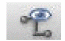
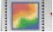
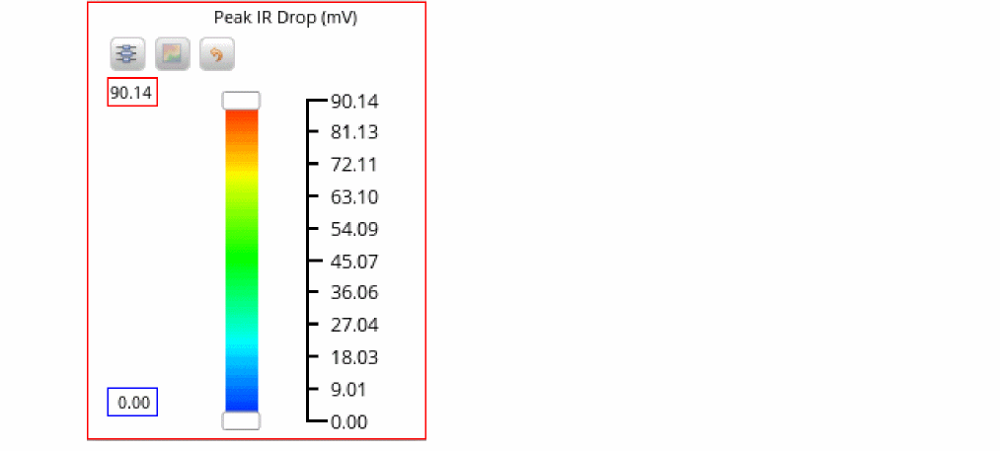
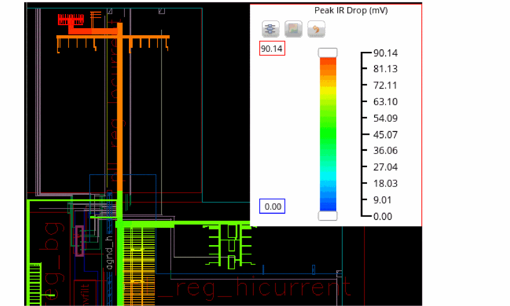
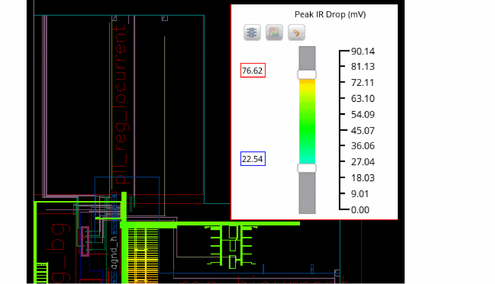
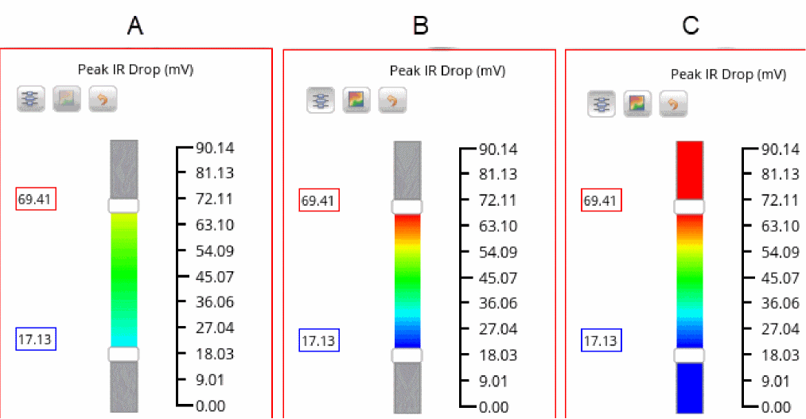
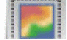
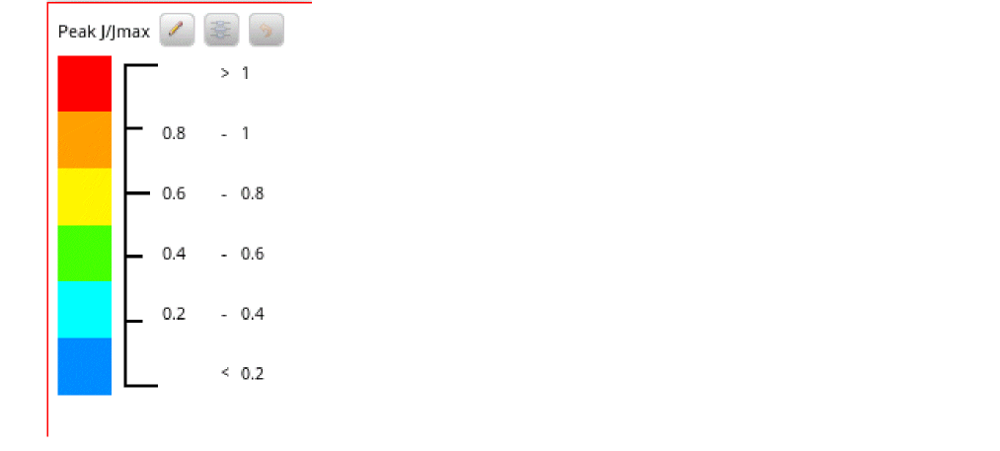
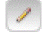
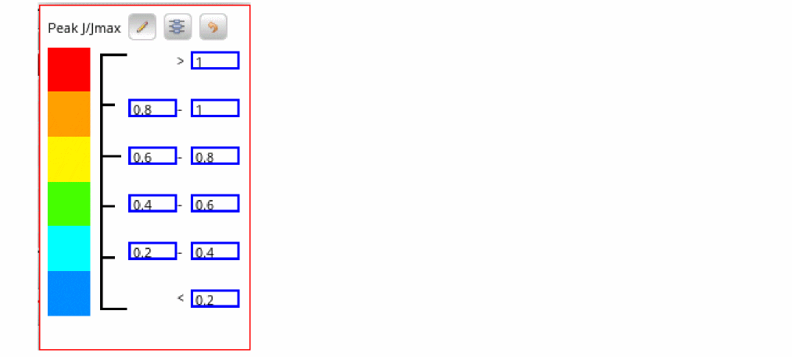

Customizing the Range for Viewing Violations
The Legend button in the Voltus-XFi Results Browser lets you customize the range of violations you want to view and control the display of plots. This data filtering feature via the Legend button is available for the IR, EM, and SPGS analyses.
There are two types of legends, sliders and buckets:
- The slider or color gradient based filter allows you to modify the minimum and maximum violation values by moving the Min - Max sliders up and down. This legend type appears for the IR tab voltage plots and SPGS tab.
- The bucket or color range based filter allows you to modify 6 equal filters or buckets between the minimum and maximum values. This legend type appears for the IR tab current plots and EM tab.
To customize the filter range for the IR tab voltage plots and SPGS tab:
- Select a net for which you want to perform the analysis in the Net Summary (top) section and click Load Nets. .
- In the IR/SPGS tab, click the Plot Results ( ) icon to view the heat map plot for the complete net.
-
Click Legend to open the Legend window.
 -
Move the Min - Max sliders up and down to view violations that fall within the required slider range. You can also enter the maximum and minimum violation values in the red and blue text boxes on the left side of the sliders.
The display highlights are updated according to the new slider positions.The following images display the layout before and after moving the Min - Max sliders.
 - You can click the Redistribute the values between selected ranges button to view the complete spectrum, from “deep red” to “deep blue”, for the specified range.
-
You can click the Plot out of range values
button to view the violation values outside the redistributed Min - Max slider range. For example, if the redistributed range is between “69.41” and “17.13”, and Plot out of range values is enabled, the violations above and below the slider marks are also displayed in “deep red” and “deep blue”, respectively.
The following image shows A. Move Min - Max Slider Range, B. Redistributed Range and C. Plot Out of Range
 - You can click the Reset button to restore the default values of filters in the Min and Max fields.
To customize the maximum and minimum value of a data range for the IR tab current plots and EM tab:
-
Select a net for which you want to perform the EM analysis in the Net Summary (top) section and click Load Nets.
 .
. - In the EM tab, click the Plot Results ( ) icon to view the heat map plot for the complete net.
-
Click Legend to open the Legend window.
 -
Click the Customize 
button to specify the minimum and maximum value for a specific color/data range.
The Legend window appears in the editable form:
 - Click the Redistribute ranges button to redistribute the range based on the specified minimum and maximum values.
- You can click the Restore default ranges button to restore the default values of each data/color range.
Related Topics
- Viewing Detailed Electromigration Information
- Visualizing EM-IR Analysis Results using Voltus-XFi Results Browser
Return to top